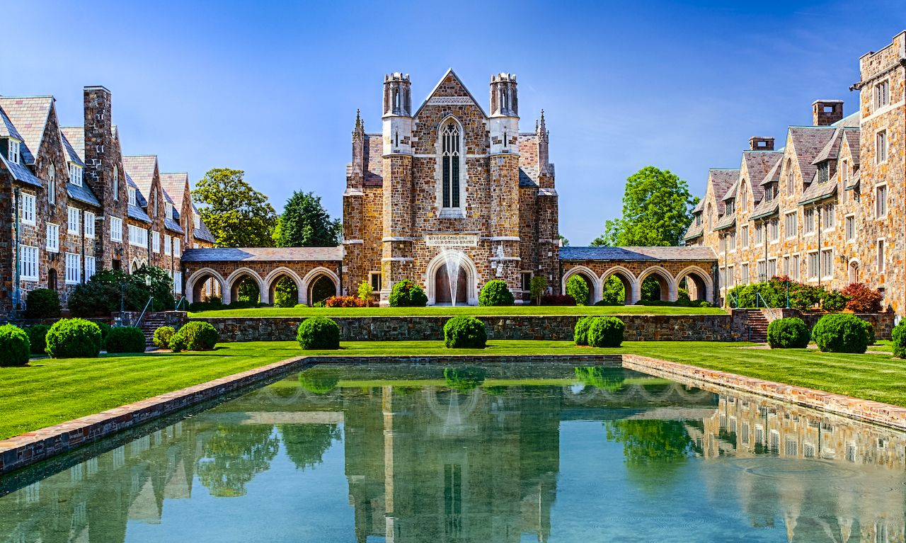

Offriamo tre programmi distinti per inserirsi in un liceo negli Stati Uniti, ognuno dei quali include un'esperienza in una famiglia ospitante. Vi invitiamo a leggere attentamente i dettagli di ogni programma per determinare quello che meglio si adatta alle vostre esigenze.
Programma Value: Questo programma offre un'esperienza in un liceo privato negli Stati Uniti. Rimarrete immersi in una famiglia ospitante, per una durata di cinque o dieci mesi. Le famiglie ospitanti selezionate hanno generalmente maggiori risorse finanziarie, e sebbene la destinazione sia casuale, questo programma offre una varietà di attività extra proposte dal liceo privato. In particolare, avrete a disposizioni migliori strutture accademiche e sportive.
Programma Choice: Questo programma vi permette di scegliere la vostra destinazione negli Stati Uniti! Partite per la destinazione dei vostri sogni: la Florida, New York, la California e molte altre. Come nel primo programma, avrete l’opportunità di vivere un'esperienza in un liceo privato con una famiglia ospitante americana per una durata di cinque o dieci mesi. In questo caso, le attività extra proposte dal liceo privato sono incluse e il costo varia in base alla destinazione scelta.
Programma ASE: Questo programma vi offre la possibilità di inserirvi in un liceo negli Stati Uniti per un periodo di breve durata, da due a cinque mesi. È il nostro programma più conveniente, ma è opportuno notare che la durata limitata dell'esperienza significa che alcune opzioni e attività possono essere limitate. Tuttavia, questo programma offre un'ottima opportunità per scoprire la vita di uno studente americano per un breve periodo prima eventualmente di svolgere un anno completo negli USA.
Se desiderate ulteriori informazioni su questo programma, contattaci via e-mail all'indirizzo seguente, authenticstudent.it@gmail.com, o con un messaggio wathsapp o chiamandoci al +39 3333854818.
Attualmente, Authentic Student dispone di oltre 200 licei pubblici e privati americani in tutto il territorio degli Stati Uniti. Abbiamo fatto attenzione a selezionare i migliori licei affinché i giovani studenti italiani possano godere appieno di ciò che i nostri programmi hanno da offrire.
Proponiamo numerose destinazioni fantastiche, tra cui Chicago, Miami, Los Angeles, New York, la California, la Florida e molte altre.
Gli elementi distintivi di questo programma di questi programmi
Diventare bilingue in inglese: Vivere in un ambiente linguistico dove si interloquisce in inglese per l'intera giornata divenendo un modo molto efficace per diventare bilingue.
Esperienza culturale: Come studente di scambio, avrai la possibilità di vivere con una famiglia ospitante americana e scoprire la cultura e le tradizioni locali. Avrai anche l'opportunità di incontrare altri studenti americani e stranieri, immergendoti così nella vita studentesca statunitense.
Sviluppo personale: Vivere in un ambiente straniero può aiutarti a vedere il mondo da una prospettiva nuova e sviluppare una visione più ampia e aperta delle questioni globali. Avrai anche l'opportunità di viaggiare e scoprire diversi stati degli Stati Uniti.
Opportunità accademiche: Le istituzioni educative americane sono spesso molto rinomate, offrendo programmi accademici di qualità e risorse di ricerca avanzate. Come studente di scambio, avrai l'opportunità di seguire corsi e accedere a tali risorse.
Espansione degli orizzonti: Vivere in un ambiente straniero può aiutarti a vedere il mondo da una prospettiva nuova e sviluppare una visione più ampia e aperta delle questioni globali. Avrai anche l'opportunità di viaggiare e scoprire diverse regioni degli Stati Uniti.
Il sistema di corsi negli Stati Uniti è abbastanza differente da quello in Italia e presenta diversi vantaggi
Scegliendo il programma "Scuole superiori negli Stati Uniti", alloggerai direttamente presso una famiglia ospitante americana.
La scelta di una famiglia ospitante americana come studente di scambio presenta numerosi vantaggi. In primo luogo, ti consente di vivere in un ambiente familiare, scoprendo autenticamente la vita quotidiana americana. Avrai l'opportunità di condividere i pasti con la tua famiglia ospitante, partecipare alle loro attività familiari e imparare espressioni e abitudini locali che non troveresti nei libri.
Inoltre, la tua famiglia ospitante può offrirti un prezioso supporto durante il tuo soggiorno negli Stati Uniti. Possono aiutarti a orientarti nella tua nuova scuola, a trovare attività extracurriculari ed eventi locali interessanti, nonché ad integrarti nella tua nuova comunità. Possono anche aiutarti a comprendere e rispettare le differenze culturali, facilitando la tua adattamento al nuovo paese ospitante.
Inoltre, vivere con una famiglia ospitante può permetterti di creare legami duraturi con persone di diverse culture, rafforzando la tua comprensione e tolleranza verso gli altri. Questa può essere un'esperienza molto arricchente e gratificante che contribuirà al tuo sviluppo personale e professionale.
Se soddisfate tutte le condizioni di ammissione di seguito, allora siete idonei al programma Lycée aux USA!
Altri criteri possono essere aggiunti a seconda della scuola del ragazzo.
Se non soddisfate al 100% tutti i criteri, non esitate a contattarci per trovare insieme opzioni o programmi adatti a voi.
Il costo include:
Il costo totale non include: